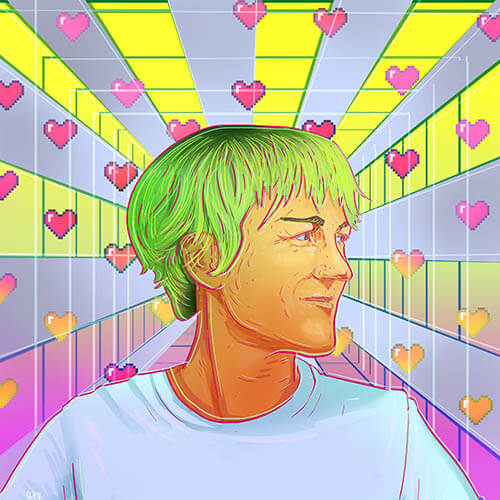

▼△▼△ Lark VCR
aka. Lark Alder
BORN: Santa Ana, CA 1981
CURRENT RESIDENCE: California, US
GENDER IDENTITY: Glamsport / Genderfluid
PRONOUNS: They/Them/Theirs
illustration by Edgar Mojica
Bio
Lark VCR (aka Lark Alder) makes speculative proposals to explore the pitfalls and possibilities of an increasingly digitized and bioengineered world. Working in hybrid forms of video and web-based media, they leverage humor as an entry point to engage audiences in nondidactic cultural critique.
VCR stands for Virtually Conflicted Reality - it is both an homage to analog video and a skeptical nod at the techno-utopian promises of virtual reality (VR). Experientially, it is the state of perpetual disconnect we navigate as cognizant individuals who have no choice but to participate in systems defined by injustice.
Lark received an MFA from UC Berkeley in 2016 and is currently teaching courses at intersections of art, technology, and queerness at San José State University (SJSU) and Stanford University in their home state of California.
CV
TEACHING
2021 Lecturer, Stanford University. Courses: Queer Technology and Speculative Design (Winter Quarter), Stanford, CA
2017-now💗 Lecturer, San José State University. Courses: Digital Media Art / Creative Code, Intro to Queer Arts, Advanced Video Production, Advanced Projects (Augmented Reality), BFA Capstone Exhibition, Intro to Digital Video Art, San Jose, CA
2018-2020 PRIDE Center Faculty Fellow. Curated QuArtz queer arts events, San José State University, San Jose, CA
2017 Lecturer, SAE Expression College, Multi-Media and Web Development, Oakland, CA
2016 Lecturer, UC Berkeley, Courses: Video Production, 2D Digital Animation, Berkeley, CA
EXHIBITIONS
2020 Traumagotchi, Interactive website and installation, Invincible California, Worth Ryder Gallery, Berkeley, CA
2019 Humancomputerlove.com, Interactive website and installation, (Inter)Facing Digital Media Art Faculty Exhibition, Natalie and James Thompson Art Gallery, San Jose, CA
2019 The Lesbian Lexicon, digital photo, Hit Gallery, San Francisco, CA
2019 Humancomputerlove.com, Interactive website and installation, Gender Bodies and Technology Conference: TechnoLogics - Power and Resistance, Virgina Tech, Roanoke, VA
2018 Traumagotchi, Interactive website and installation (collaboration with Porpentine Heartscape), Queer Technology Exhibition, Berkeley Art Center, Berkeley
2018 Traumagotchi, Video game and installation, NextNew Games, San Jose Institute of Contemporary Art, San Jose
2017 Traumagotchi, Video game and installation, Vital Hybrids, B4BEL4B, Oakland
2017 Culturally Competent Wiki, Website and installation, Vital Hybrids, B4BEL4B, Oakland
2017 FEMMEBOT.net, Creative Coding Intensive Group Show, Gray Area Foundation for the Arts, San Francisco, CA
2016 Tattle-Tale Heart, Film and installation, Third Party, CNTRL-SHFT Collective, Oakland
2016 Tattle-Tale Heart, Film and installation, Berkeley Art Museum, Berkeley
2015 Geoff’s Letter of Unapology, Installation, Berkeley Center for New Media, Berkeley
2015 Opossum Impressions, Installation, Berkeley Center for New Media, Berkeley
2015 Meeglo, TattleTale Heart & Babump, Installation, Murphy-Cardogan Exhibition, SOMArts, SF
2015 Happy Toilet, Video installation, SGraffito, Oakland
2015 Babump, Installation, San Francisco International Arts Festival, Fort Mason, SF
2015 Babump, Installation and performance, Worth Ryder Gallery, Berkeley
2014 Slime Queen, Music and performance, Rainbow in the Dark, 15-city US performance tour
2014 Quick! Eat my diamond, Video and installation, WorkMore!, SOMArts, SF
SCREENINGS
2018 Tattle-Tale Heart, The Cinema of Gender Transgression Communal Shorts Program, Anthology Film Archives, NYC
2018 Happy Toilet, The Cinema of Gender Transgression TRANIMATION!, Anthology Film Archives, NYC
2017 Tattle-Tale Heart, Femmosphere, Schwules Museum, Berlin
2017 Tattle-Tale Heart, Boston LGBT Film Festival, Boston
2017 Tattle-Tale Heart, MIX NYC, NY Queer Experimental Film Fest, New York
2016 Tattle-Tale Heart, Berkeley Art Museum, Berkeley
2016 Tattle-Tale Heart, TWIST Seattle Queer Film Fest, Seattle
2016 Tattle-Tale Heart, Echo Park Film Center, Los Angeles
2016 Tattle-Tale Heart, Periwinkle Cinema, Artist’s Television Access, SF
2016 Slime Queen, CRIBS Music Videos, UMASS Amherst
2015 Kim’s Corner, Creative Growth Video Screening, The New Parkway, Oakland
2015 Happy Toilet, QueerFail Festival, Luggage Store Gallery, SF
2014 Happy Toilet, Frameline Film Festival, SF
2013 Happy Toilet, SF Transgender Film Festival, SF
2011 Fantastic Variety, Local Underground, Artist’s Television Access, SF
2011 Slime Queen, Experimental Half-Hour (TV Show), Portland Community Media, Portland
GRANTS / RESIDENCIES
2020 Academie Schloss Solitude, Web Residency: Muntu Maxims, Online / Stuttgart Germany
2016 Investing in Artists Grant, Center for Cultural Innovation
2016 East Bay Fund for Artists Grant, East Bay Community Foundation
2016 Fellowship, UC Berkeley Department of Art Practice
2016 CITRIS Invention Lab Fellowship
2015 Peter Lyman Fellowship in New Media
2015 CITRIS Foundry Tech Incubator 2015-16 Cohort
2015 Murphy-Cardogan Contemporary Arts Award
2003 David Rockefeller Travel Grant
LECTURES / PRESENTATIONS / WORKSHOPS
2020 Experimental Chatroom Workshop, Hackers & Designers Summer Academy 2020: Network Imaginaries. Collaboration with Xin Xin
2020 Artist Talk, Tuesday Night Lecture Series, San Jose State University, San Jose, CA
2019 Speaker, Code Kitchen, Parsons School of Art and Design, New York, NY
2019 Interview, State of The Art podcast with guest host Dorothy Santos
2019 Workshop Organizer, “Human-Computer Love: Liberatory applications for future sex technologies”, Gender Bodies and Technology Conference: TechnoLogics - Power and Resistance, hosted by Women’s and Gender Studies Program at Virgina Tech, Roanoke, VA, April 2019
2019 Panelist, “Playing with Ourselves: Examining Life Through Virtual Media”, Gender Bodies and Technology Conference: TechnoLogics - Power and Resistance, Roanoke, VA, April 2019
2019 Lecture/Presentation, “Incantation in Code,” Processing Community Day, sponsored by the Processing Foundation, Los Angeles, CA
2018 Visiting Artist Lecture, Forum Lecture Series, CSU East Bay, Hayward, CA
2018 Panelist/Presentation, “Human-Computer Love,” Gender, Sex & VR Panel, San Jose State University, San Jose, CA
2018 Keynote, Creative Coding Fest (CC Fest), San Francisco
2018 Artist Talk, Talking Art: NEXTNEWGAMES, San Jose Institute of Contemporary Art, San Jose, CA
2018 Panelist, Queer Technology Panel Discussion, Berkeley Art Center, Berkeley, CA
2018 Artist Talk, 'Virtually Living: The Tamagotchi Effect,' LASER Art and Science Series, San Jose State University (SJSU), San Jose, CA
2018 Visiting artist in discussion with “Queer Wiki” class, Mills College, Oakland, CA
2017 Artist talk, Living Room Light Exchange, Oakland, CA
2016 Artist Talk, 'Stake in the Heart,' LASER Art and Science Series, University of San Francisco, CA
2016 Artist Talk, Survivors' Symposium, UC Berkeley, Berkeley, CA
2015 Lecture/Presentation, 'Big Data Meets the Beating Heart' Manufacturing Transparency Conference, UC Berkeley, Berkeley, CA
2015 Lecture/Presentation, 'Health Data for Employers,' Graduate Research Hot Topics, Berkeley EECS Annual Research Symposium (BEARS), Berkeley, CA
CURATORIAL PRACTICE
2018-2020 QuArtz Queer Arts Programming, San Jose State University, San Jose, CA